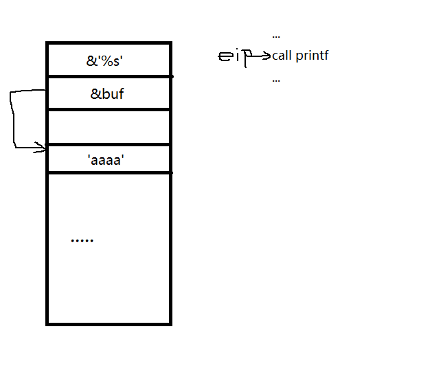
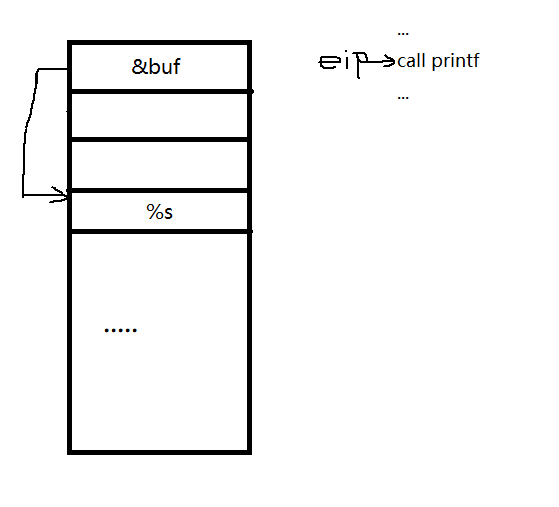
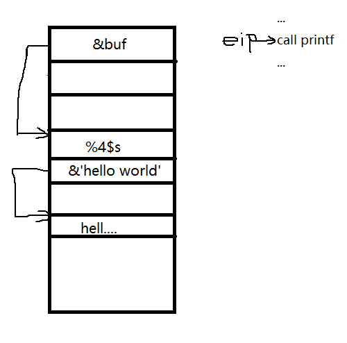
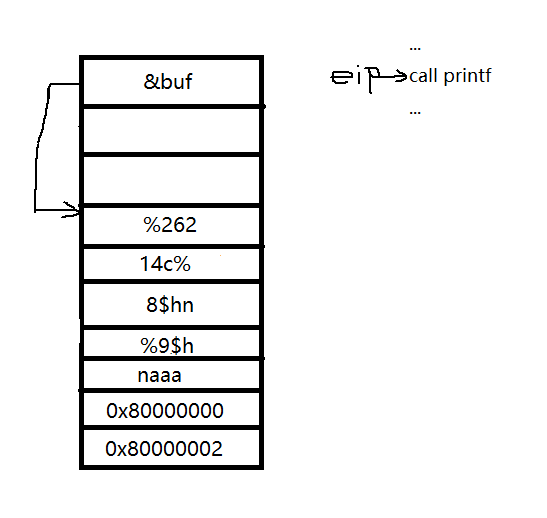
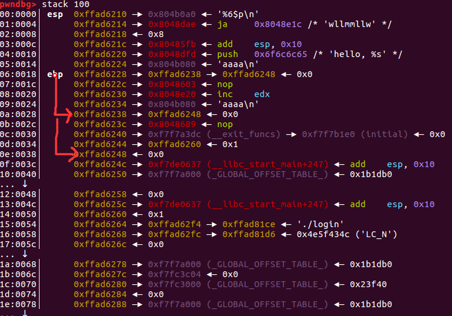

最近比赛有太多的格式化字符串漏洞，今天就来总结一下常见的格式化字符串。由易到难的讲解格式化字符串的利用和最近遇到格式化字符串的考点。
漏洞原理分析
格式化字符串一般都是程序员为了偷懒而导致的漏洞。为了输出字符串，而直接使用printf(&buf)来打印字符串。今天我们从原理上来讲解这样写为什么会产生漏洞。
正常的使用printf(“%s”,&buf);来打印字符串
当call printf的时候栈上的结构为：

这样函数就打印出第二个参数的地址上的字符串,这样就能正常打印出‘aaaa’。printf函数识别出‘%s’是一个格式化字符串，然后根据这个格式化字符串去取参数，’%s‘默认取第二个参数为作为字符串输出地址也就是‘%s’的下面一个栈空间，这样就能打印出‘aaaa’。
如果我们程序员偷懒，不使用格式化字符串，那么我们还是能打印出来。

因为printf没有解析到格式化字符串，直接将‘aaaa’作为格式化字符串输出了。这原理就像是我们平时用printf(“hello world !!”);这个道理是一样的。但是这个时候和printf(“hello world !!”);不一样的是，字符串是我们能控制的，这个时候漏洞就出现了。
32位格式化字符串利用
如果我任意构造一个格式化字符串，printf就会去解析，然后就根据解析的内容，去栈上都读偏移，然后执行相应的功能。
例如，我们输入一个‘%s’的格式化字符串，我们来分析他的原理。

同理，printf解析出‘%s’了，相应的他要读出printf的第二个参数上的值。可是我们又没有给第二个参数，但是在程序里面，确认参数是不看你有没有输入，而是看栈的偏移。对于printf来说，第一个参数是栈顶，第二个参数是当前的[esp+4],第三个参数是[esp+8],依次类推。这里也就是输出‘&buf’栈空间下面那个地址上的值。但是这个地方不确定是不是地址，所以程序可能打印失败。
但是格式化字符串给了一个我们可以自动定位的一个格式化字符串‘%n$’的参数。也就是在这里可以自己定位栈空间。
如果我们在这个给的是这‘%4$s’+p32(&’hello world’)

所以这个时候打印出来的就是’hello world’了。这个printf解析出有格式化串‘%4$s‘，也就是将buf栈下第4个栈空间的地址上的值当作字符串打印出来。注意这个p32(&”hello world”)在这里只是做举例用，这个值我们可以写做任意一个值，也就是说我们能泄露任意地址上的值。这就达到了任意地址泄露。
当然达到任意地址泄露往往只是成功了一半，我们还需要达到任意地址写。
这个时候printf又提供了一个参数’%n‘,这个参数是将前面打印出来的字符数量写入到第二个参数的所指向的地址上的值。这个时候配合’%c‘可以写任意的值。当然这个’%n‘也可以结合’n$‘来使用，可以定位在栈上偏移。
例如，我们想在0x80000000(只是举例，不保证地址的合法性)上面写一个0x66666666
我们应该这样构造出这样的栈

payload应该是这样%1717986918c%7$n+p32(0x80000000),这样就可以在0x80000000上面写0x66666666。
但是一般这样写有个问题，靠%1717986918c打印出0x66666666需要很长时间，一般程序会死掉，所以不能直接这么写。但是printf还提供了一个%n同类的格式化字符串
%n 一次性写入四个字节
%hn 一次性写入两个字节
%hhn 一次性写入一个字节
然后我们可以这样构造
%26214c%8$hn%9$hnaaa+p32(0x80000000)+p32(0x80000002)
注意，构造的时候，在格式化的串直接不有’\x00‘字符串截断，不然printf不能解析格式化字符串了。

这样就可以任意地址写了。
一般来说，格式化字符串就是通过任意地址读写，来泄露got和修改got表来达到劫持程序流程。
pwntools整合了32位格式化字符串的利用。
fmtstr_payload(offset,{target_addr:value},write_size=’short’)自动就生成了payload,但是我不建议新手直接使用这个函数。
原理讲解到这里了，来个例子：
64位格式化字符串利用
64位的和32位的利用方式其实是差不多的，唯一的差别就是64位的传参方式不一样，所以偏移量不一样。64位传参方式是rdi,rsi,rdx,rcx,r8,r9。第一个参数已经被我们格式化字符串占用了，所以第%1$p是rsi的值，然后往后顺延，直到%6$p是栈上第一个数据，然后后面和32位差不多了。
但是64位和32位还有一点不同的是，32位的地址一般能沾满整个栈单元，没有’\x00’字符，所以就不会无论地址写在格式化字符串前或者后面，都不会会造成格式化字符串的截断，但是64位不同，64位的地址一般不会沾满整个栈单元，一般只使用六个字节。所以会有’\x00’截断，如果把地址写在格式化字符串的前面，那么就会产生’\x00’截断，导致后面格式化字符串被截断不执行。
好了 这里也举个例子说一下吧。
题目链接
Ebp chain修改任意地址
Ebp chain是格式化字符串比较高级的利用方式，前两种利用方式是我们输入的值直接在栈上，但是如果我们输入的值全在bss段上，那么我们怎么做到修改格式化字符串呢？
通过上面的知识我们得知，想要修改或者读一个地址的值，那么这个地址就得在栈上。所以我们要想办法把这个地址写到栈上。这个说起来有点抽象，还是举个例子吧。
这是swupctf的一道题。
题目链接：login
首先我们进IDA看一下
1 | int sub_804854B() |
我们发现这是个无次数限制的格式化字符串利用。但是这里往bss段上写，不能像上面那样利用。这个时候我们看一下我们利用的时候，栈上的数据

我们能看到栈上ebp的指针指向上一个ebp。上一个ebp指向上上个ebp。我们前面是不是说过只要有地址，我们就能往这个地址上写任意的值。
这个时候我们可以这样利用。这里我们为了叙述，我们把当前ebp叫ebp1,我们上一个ebp叫ebp2,我们把上上个ebp叫做ebp3。
这个时候我们需要转换思维，既然这个有值是栈地址，我们就不需要去修改got表再劫持程序了，我们直接修改老eip。
我们可以这样利用，我们通过ebp1将ebp2的值，让他指向一个老eip。所以然后就可以利用了。然后通过ebp2去修改老eip的值。最后改为system地址
我的脚本
1 | from pwn import * |